Auduio is a music studio that runs in your web browser, as a desktop app (Windows, macOS, Linux) and on phones. You can record your voice or instruments, play synthesizers and drums, build beats with a step sequencer, cut and arrange your recordings, and make it all sound good with one button (Auto-Mix).
This manual uses plain words. Where a music word is needed, it is explained the first time.
Tip for everyone: you cannot break anything. Every change can be taken back with Undo (the curved arrow at the top, or Ctrl+Z on Windows/Linux, Cmd+Z on a Mac).
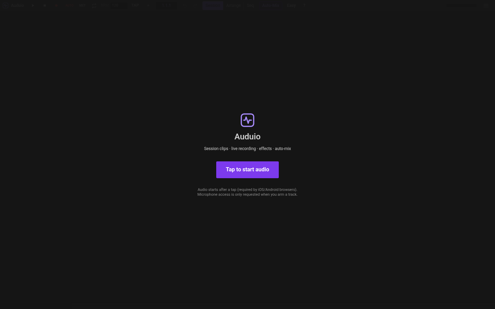
What is a track? A track is one lane for one sound: one for your voice, one for a guitar, one for drums.
The screen has four main parts:
| Part | Where | What it does |
|---|---|---|
| Top bar | top | Play, Stop, Record, tempo, Undo, the three views, Auto-Mix, Help and the Menu |
| Browser | left | All instruments and effects; drag one onto a track or double-click it |
| Main view | middle | Session, Arrange or Seq (switch with the buttons or the Tab key) |
| Device panel | bottom | The instrument and effects of the selected track, with knobs |
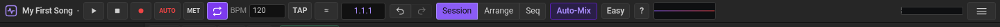
From left to right:
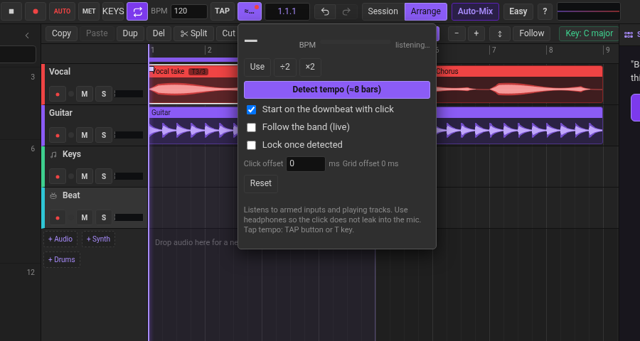
The loop bar is the purple bracket above the timeline in the Arrange view.
Take recording: press Record while the loop is on and sing or play the part several times in a row. Every pass is kept as a take. The clip shows a badge like T3/3 (take 3 of 3). Long-press or right-click the clip and choose Take 1, Take 2 ... to pick the best one. Nothing is thrown away.
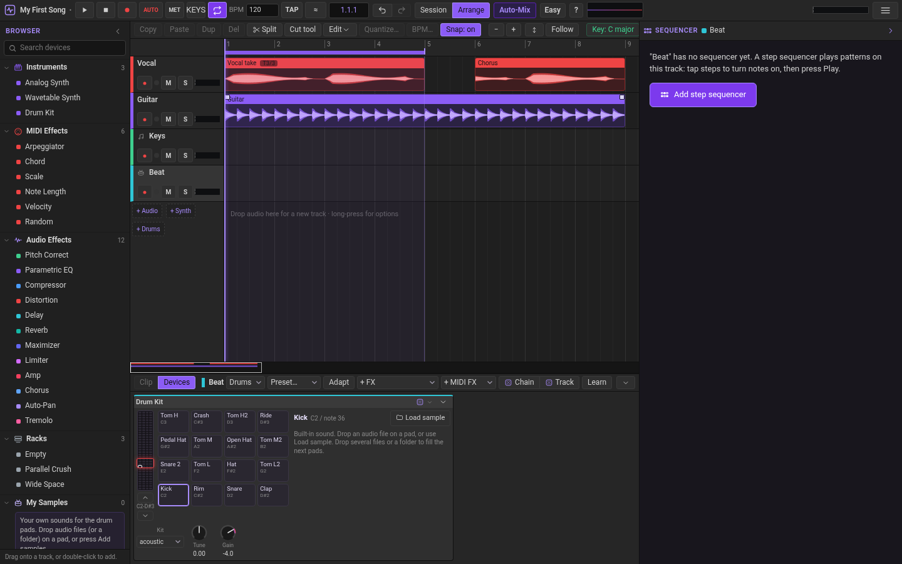
A clip is a piece of sound on a track: a recording, an imported audio file, or MIDI notes.
Two ways to work:
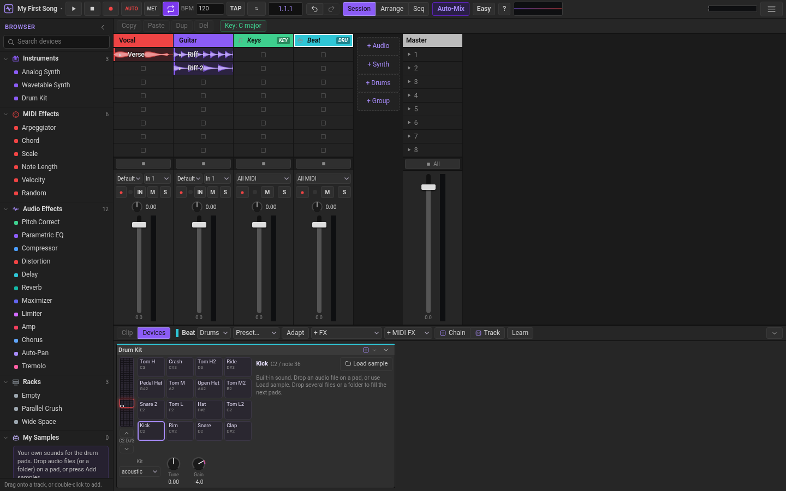
Adding tracks: use + Audio (microphone or line in), + Synth, + Drums or + Group at the end of the Session view, or in the Seq view + Synth / + Drums.
Working with clips:
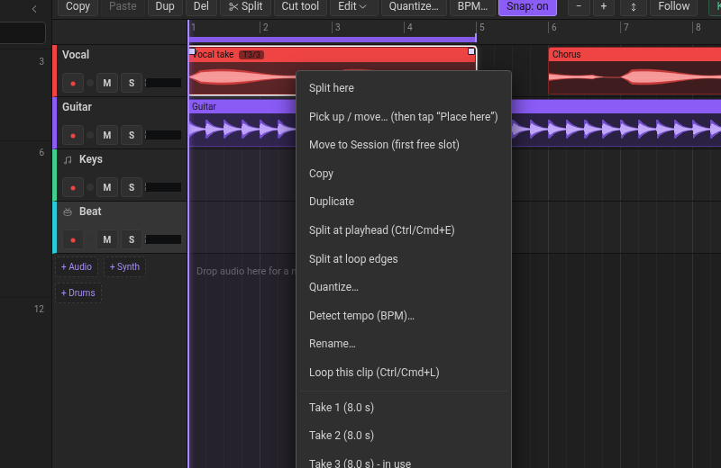
A track's menu (right-click or long-press its name) lets you rename it, change its colour (Next colour), group it and more. Groups combine several tracks on one fader with their own effects.
There are several easy ways to cut clips. They all work the same for audio clips and MIDI clips, and every cut is one Undo step.
| How | What happens |
|---|---|
| Ctrl+E (Mac: Cmd+E) or S | Split at the playhead. If a clip is selected, only that clip; otherwise every clip under the playhead on the selected track. |
| Split button (Arrange toolbar) | Same as Ctrl/Cmd+E. |
| Cut tool (button, or key X) | A red line follows the mouse. Click a clip where you want to cut it. Hold Alt/Shift for a cut that does not snap to the beat. Press X or Esc to go back to normal. |
| Split here (right-click / long-press a clip) | Cuts exactly where you pressed. |
| Edit > Split at loop edges | Cuts every clip where the loop starts and where it ends. |
| Edit > Delete loop section | Removes everything inside the loop on all tracks and leaves a gap (silence). |
| Edit > Cut out loop section | Removes the loop section and moves everything after it to the left, so the gap closes. |
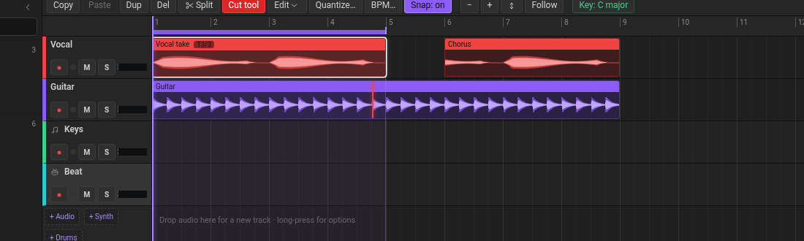
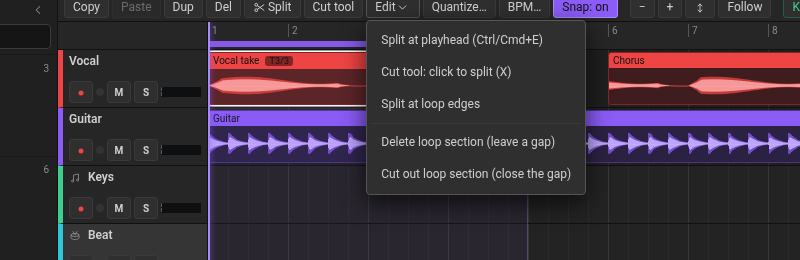
Trimming a clip: to remove the start or end of a clip, cut it and delete the piece you do not want, or put the loop over the part to remove and use Delete loop section.
On a phone: go to Tracks, press and hold a clip, and choose Split here (cuts at the playhead), Split in half, Split at loop edges, Move or Delete. See section 13.
MIDI tracks play notes on an instrument. MIDI simply means notes (which key, how hard, how long), not sound. Auduio has three built-in instruments:
Play them with a MIDI keyboard, the on-screen keyboard in the device panel, or the step sequencer. Double-click a MIDI clip to open the piano roll and draw or edit notes.
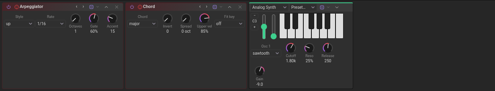
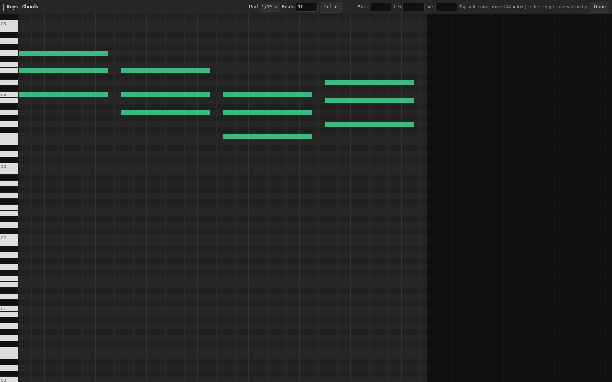
The Drum Kit works like a drum machine with 128 pads, one for every MIDI note (0 to 127). You see 16 pads at a time (4 by 4). The lowest pad is bottom-left, the highest top-right. It starts on Kick (note 36).
Next to the pads is a thin overview strip that shows all 128 pads as tiny squares:
Putting your own sound on a pad
| How | What happens |
|---|---|
| Drag an audio file onto a pad | The pad now plays your file. |
| Drag several files or a whole folder onto a pad | They fill that pad and the next ones, in name order (kick1, kick2, ... kick10). Up to 128. |
| Select a pad and press Load sample | Choose a file from your computer or phone. |
| Right-click a pad (phone: hold it) | Load sample..., Load a folder (fills pads from here)..., Clear pad, Play. |
| My Samples in the browser | Every sample you have loaded. Drag one onto a pad, or double-click it to put it on the selected pad. |
Accepted files: WAV, AIFF, MP3, FLAC and OGG, up to 50 MB each. Files are checked before they are used; a file that is damaged or is not really audio is refused with a short message, and nothing else changes. Very long files are cut to 30 seconds (drum sounds are short).
Pad settings (click a pad to select it; the settings appear next to the pads):
Every change can be undone. Your samples are saved inside the project, so they are still there after you close Auduio, and they travel with the project when you export it (.zip). To save memory, a sample is only loaded when it is needed (when it is on screen, used in a pattern or clip, or played).
In the step sequencer, the drum rows are the same 16 pads that you see in the Drum Kit, and the overview strip is next to them there too. Scroll to other pads to program them.
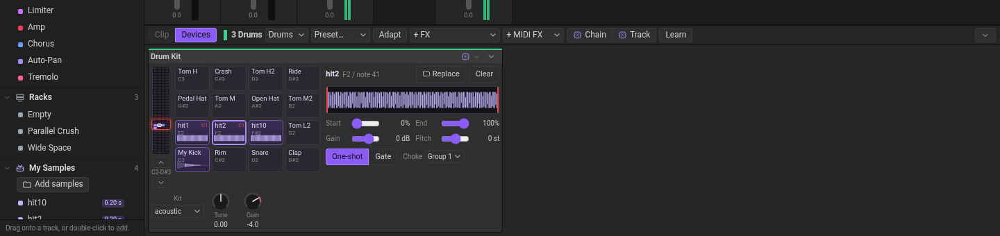
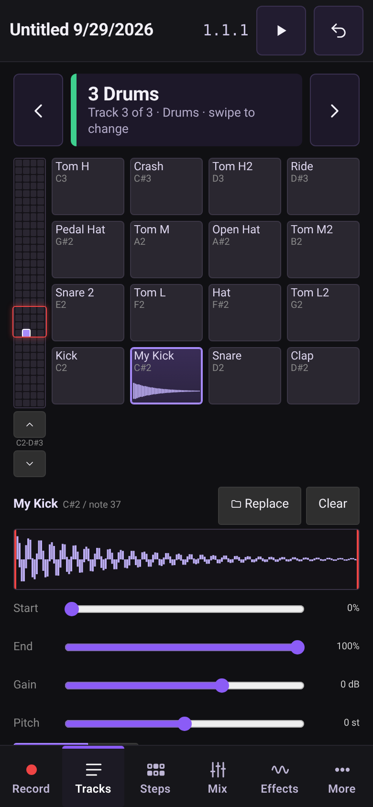
Pitch Correct moves sung notes to the nearest correct note of the song's key.
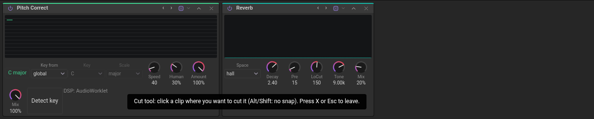
Auto-Mix makes all tracks sound good together with one button.
You can change anything afterwards, and Undo takes the whole Auto-Mix back. Adapt on a track gently keeps adjusting its tone while you play live.
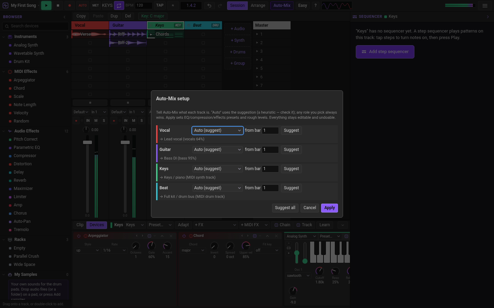
Effects change the sound of a track: Parametric EQ, Compressor, Reverb, Delay, Distortion, Amp, Chorus, Auto-Pan, Tremolo, Maximizer, Limiter and Pitch Correct.
A rack is a box of several effects side by side (parallel chains) with 8 macro knobs that turn many settings at once. Try the ready-made racks Parallel Crush and Wide Space.
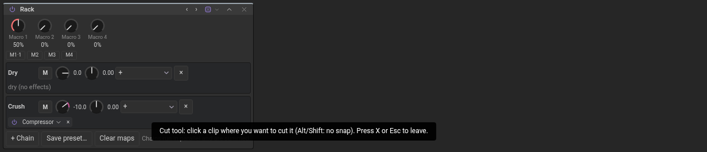
MIDI effects change the notes before they reach the instrument:
They also work on notes from the step sequencer.
Every device (instrument, effect, rack, MIDI effect, plugin) has a dice button. Press it for new, surprising settings.
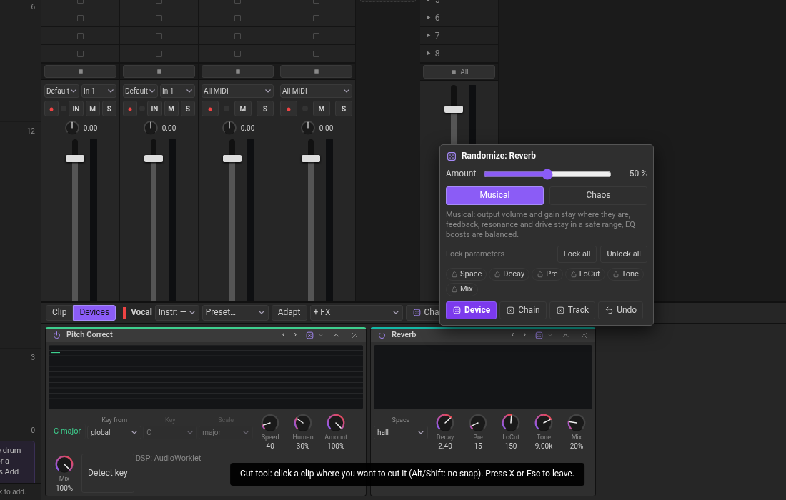
The Auduio desktop app for Windows, macOS and Linux can load your VST3 plugins (and AU plugins on macOS). CLAP support is planned.
Browsers, phones and tablets cannot load plugins; the Plugins section says "Desktop app only" there.
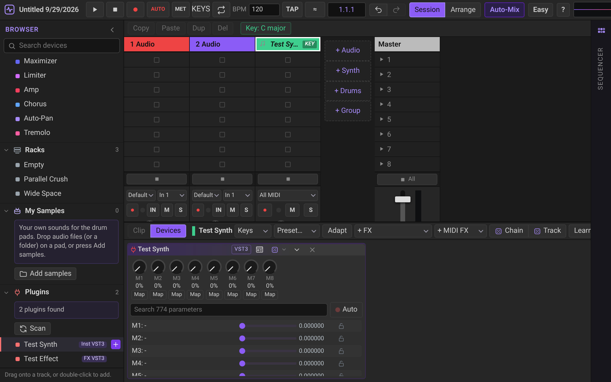
The step sequencer builds patterns by turning steps on and off, like a drum machine. It is inspired by hardware sequencers such as the Squarp Pyramid and Hapax.
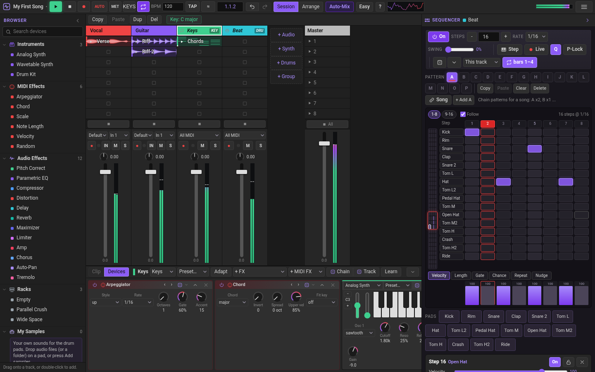
First pattern in 4 steps:
The parts of the Seq view, from top to bottom:
Step settings (every step has its own):
| Setting | Meaning |
|---|---|
| Note | Which note (several notes make a chord) |
| Velocity | How hard (1-127) |
| Length | How many steps the note lasts |
| Gate | How much of that length is held (short = staccato) |
| Chance | Probability: the chance the step plays each time round |
| Repeat | Ratchet: plays the step 2 to 8 times quickly |
| Nudge | Plays the step a little early or late |
| Parameter locks | Any knob of this track's devices can have its own value on this step |
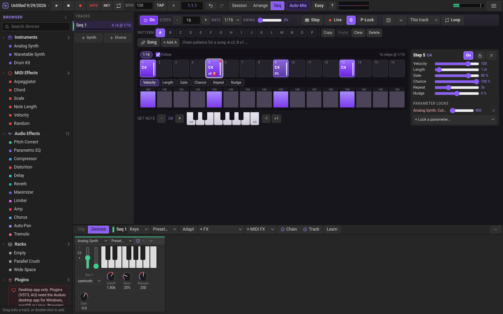
Parameter locks (P-Locks): select one or more steps, press P-Lock, then turn any knob of that track (synth cutoff, reverb amount, a plugin parameter ...). The step plays with that value, then the knob goes back. You can also use + Lock a parameter... in the step editor. Steps with locks have a small red corner.
Different lengths and speeds per track: give the drums 16 steps and the bass 12, or one track 1/16 and another 1/8t. The patterns drift against each other and meet again later: that is called polymeter and polyrhythm, and it makes grooves more interesting.
Recording into patterns:
Randomize a pattern: press the dice. Protect a step with the lock button in the step editor, or lock whole settings (for example Notes) in the dice options; locked things are never changed.
MIDI out: choose MIDI out or Track + MIDI to play an external synthesizer or drum machine (pick the port and channel). This works in browsers with Web MIDI (Chrome, Edge, Firefox) and in the desktop app on Windows, macOS and Linux (there the audio engine sends the MIDI).
The sequencer follows Play, Stop and the loop bar, and everything can be undone.
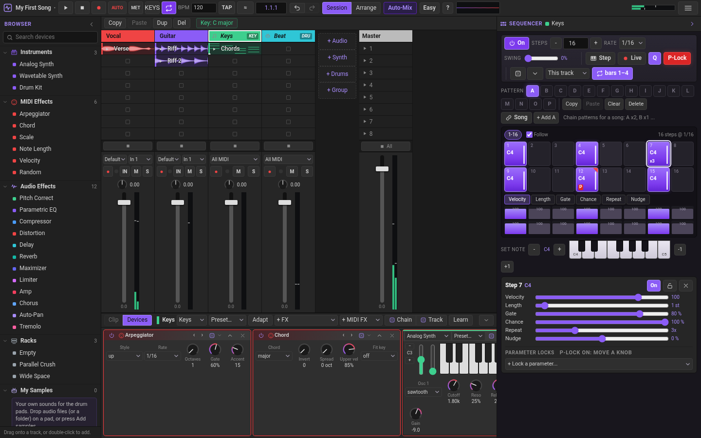
On a phone Auduio shows a simple layout with big buttons and six tabs at the bottom: Record, Tracks, Steps, Mix, Effects, More. Swipe left and right to change the track. Buttons give a short vibration (haptics) when you press them; you can turn this off in Settings.
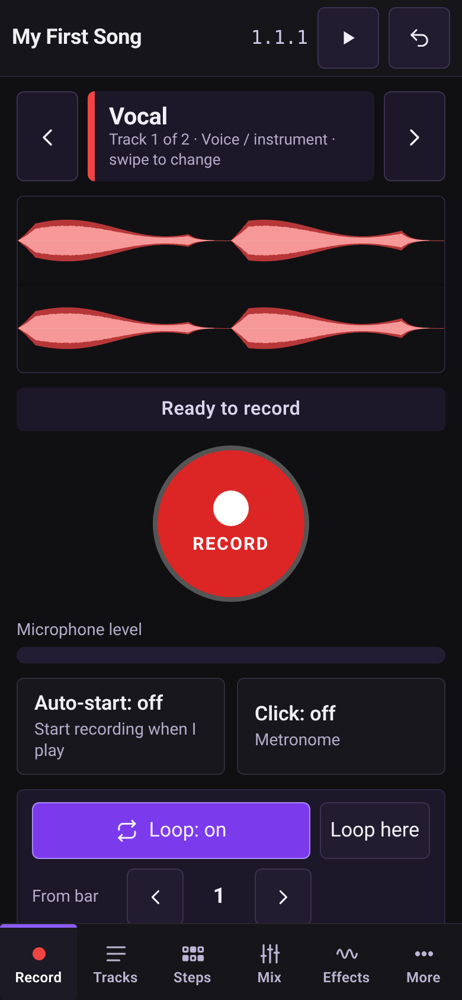 |
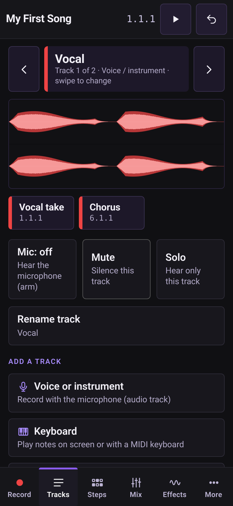 |
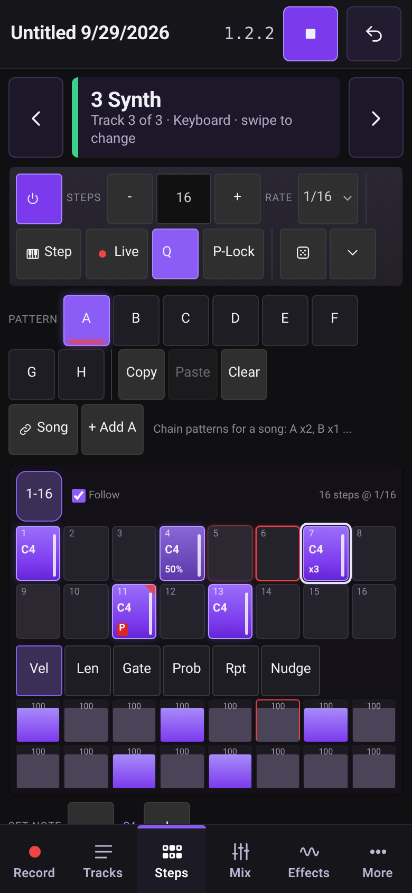 |
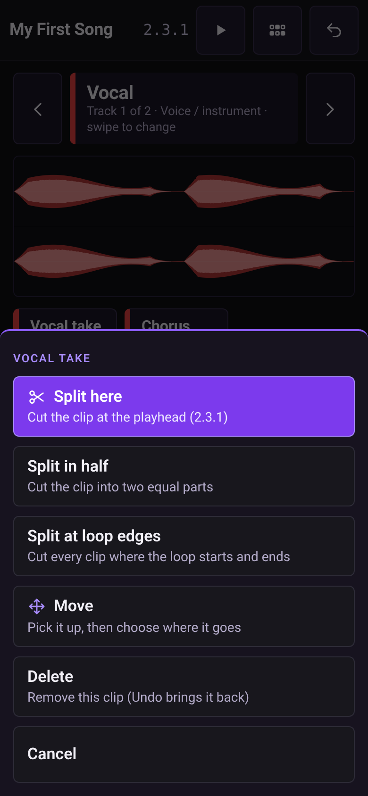 |
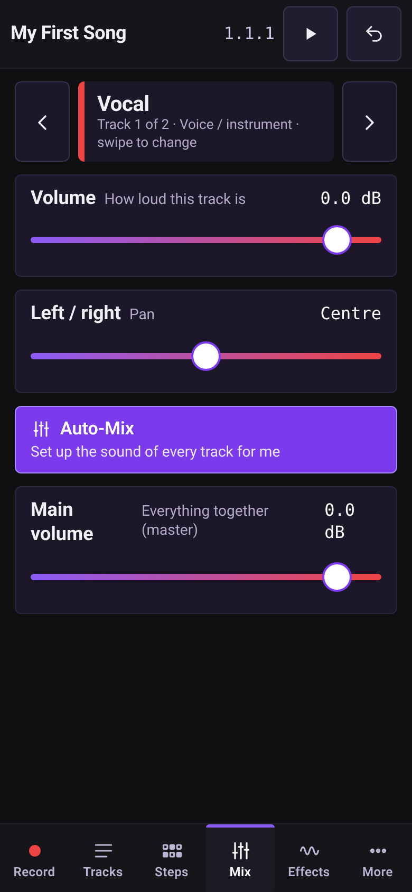 |
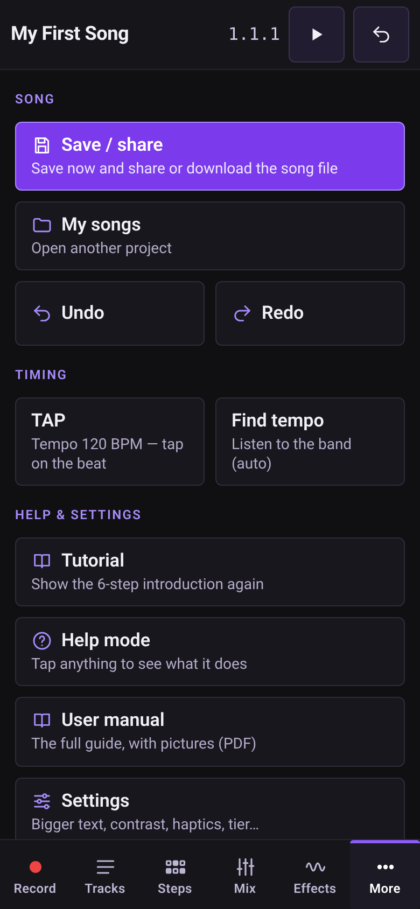 |
On tablets and computers you can switch between the layouts: Menu > Simple phone layout, and on the phone More > Show full layout.
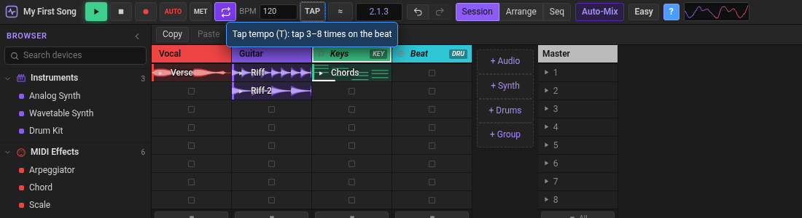
Saving: your song is saved automatically in this browser. The Menu has Projects... (open other songs), Save now, Export project (.zip) to move a song to another computer, Export encrypted... (password-protected), and Import project....
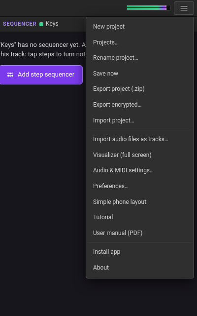
Safety and privacy: Auduio makes no network requests except loading itself; your recordings stay on your device. Imported projects are checked strictly before they are opened. You can set a PIN in Preferences to protect saved projects.
| Key | Action |
|---|---|
| Space | Play / stop |
| R | Record |
| M | Metronome on/off |
| T | Tap tempo |
| Tab | Switch view (Session, Arrange, Seq) |
| Ctrl/Cmd+Z | Undo |
| Ctrl/Cmd+Shift+Z or Ctrl+Y | Redo |
| Ctrl/Cmd+C / V / D | Copy / paste / duplicate clip |
| Delete | Delete the selected clip |
| Ctrl/Cmd+E or S | Split at the playhead |
| X | Cut tool on/off (Esc also leaves it) |
| Mouse wheel on the drum pad overview | Show higher or lower pads |
| B | Show or hide the browser |
| Ctrl/Cmd+L | Loop the selected clip |
| Alt or Shift while dragging | Place without snapping to the beat |
| Shift+click (Seq) | Select a range of steps |
Auduio v0.4 user manual. Auduio was formerly called WebDAW.